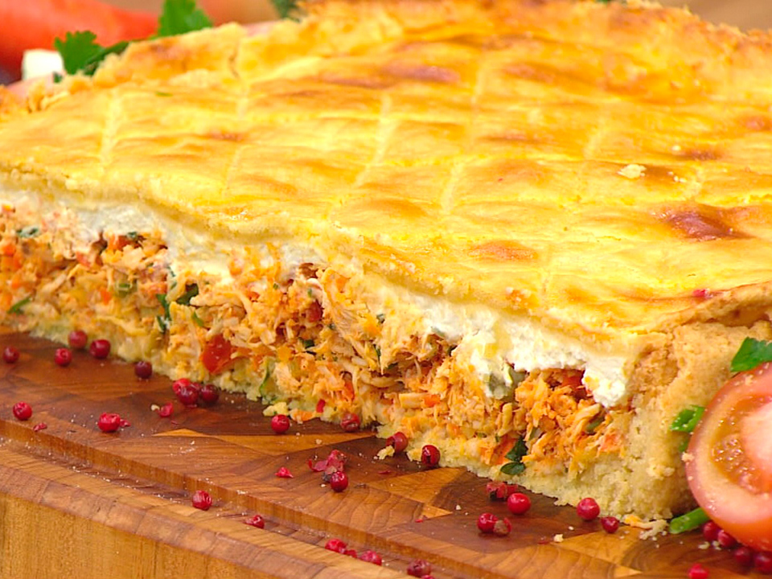
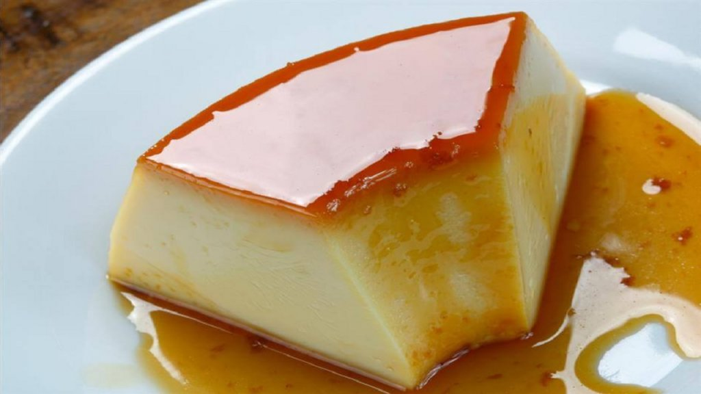
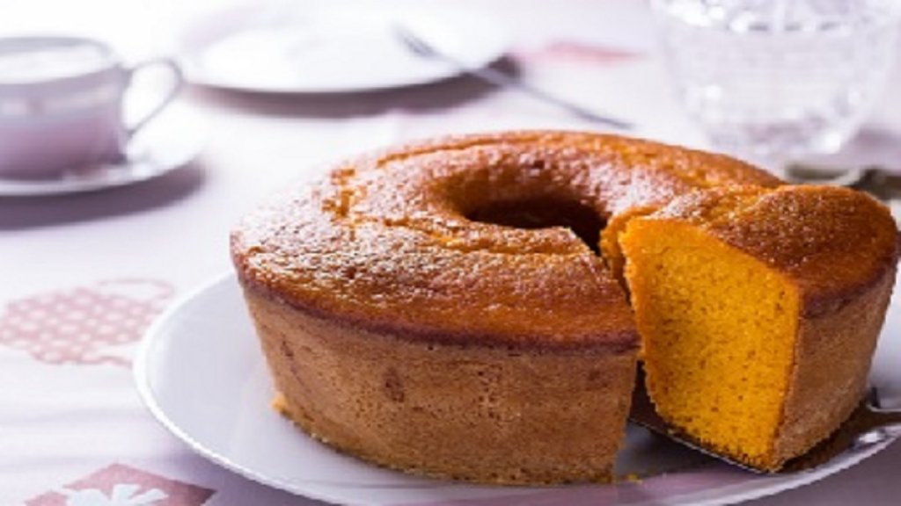

Farinha de rosca com tempero em pó de galinha para empanar
Óleo para fritar
Recheio
1 colher (sopa) de óleo
2 cebola picada
1 dente de alho espremido
1 peito de frango cozido e desfiado
1 sachê de tempero em pó de galinha
1 colher (sobremesa) de molho de tomate
1/2 tomate picado
Sal a gosto
1/2 maço de salsinha picada para salpicar
1/2 maço de cebolinha picada para salpicar
Modo de Preparo
Ferva a água com o caldo de galinha e a margarina.Adicione a farinha de uma só vez, mexendo vigorosamente até desgrudar da panela. Deixe esfriar.Com as mãos untadas em óleo, pegue pequenas porções da massa, recheie e modele as coxinhas.Empane primeiro no leite e depois em farinha de rosca.Frite, poucas por vez, em óleo quente abundante até dourarem e deixe escorrer sobre papel absorvente.
Recheio
Aqueça o óleo e refogue a cebola e o alho.Junte o frango e os demais ingredientes e deixe ferver até encorpar.Salpique salsinha e cebolinha e espere esfriar.
Receita de Empadão

Ingredientes
Massa
4 gemas
300 g de manteiga
Sal a gosto
600 g de farinha de trigo com fermento
300 g de muçarela ralada fina
1 gema levemente batida para pincelar
Recheio
1 colher (sopa) de óleo
2 dentes de alho espremido
1 cebola picadinha
2 tomates em cubinhos
1 tablete de caldo de galinha
1 colher (sopa) de extrato de tomates
sal a gosto
2 peitos de frango cozidos com temperos e desfiados
cheiro verde picado a gosto
400 g de requeijão cremoso
Modo de Preparo
Massa
Misture as gemas com a manteiga e sal a gosto.Adicione a farinha e a muçarela e misture até desprender das mãos (se a massa ficar seca, acrescente mais manteiga). Reserve embrulhada em filme plástico.
Recheio
Aqueça o óleo e refogue o alho e a cebola. Junte o tomate, o tablete de caldo de galinha esfarelado, o extrato de tomate e sal a gosto e refogue um pouco mais.Adicione o frango desfiado e cheiro-verde a gosto e deixe cozinhar por 5 minutos. Aguarde esfriar e incorpore o requeijão.
Montagem
Abra metade da massa com o rolo e forre todo o interior de uma fôrma redonda de fundo removível untada com manteiga. Recheie e cubra com o restante da massa.Pincele a gema e leve ao forno médio preaquecido (180ºC) por cerca de 40 minutos ou até dourar. Aguarde uns 10 minutos para desenformar e sirva em seguida.
Bolinha de Queijo
Ingredientes
150g de amido de milho
1 gema
200g de requeijão
1 colher (sopa) de manteiga
Sal, pimenta-do-reino e pimenta calabresa a gosto
1 colher (chá) de fermento químico em pó
1 colher (sopa) de alho picado frito
50 parmesão ralado fino
Muçarela em cubinhos para rechear
Modo de Preparo
Misture os ingredientes com as mãos até formar uma massa homogênea. Leve à geladeira por 20 minutos para firmar.Modele bolinhas com pequenas porções da massa, recheie com um cubinho de muçarela e volte a enrolar, fechando bem.Frite em óleo não muito quente até dourarem e deixe escorrer sobre papel absorvente.
Pudim da Fatinha

Ingredientes
6 colheres (sopa) de açúcar
1 lata de leite condensado + a mesma medida de leite
Modo de Preparo
Derreta o açúcar em fôrma de cone central (20 cm de diâmetro), em fogo médio, até virar uma calda caramelada (cerca de 3 minutos).Espalhe o caramelo por todo o interior da fôrma e reserve.Bata o leite condensado com o leite e os ovos no liquidificador por 1 minuto.Deixe em repouso por 15 minutos para a espuma assentar (é isso que deixa sem furinhos).Com uma colher, segure a espuma que está na superfície e despeje o líquido com cuidado na fôrma caramelada.Leve ao forno médio preaquecido (180 ºC), em banho-maria, por 1 hora e 30 minutos.Espere esfriar e leve à geladeira por 2 horas antes de desenformar.
Bolo de Cenoura

Ingredientes
4 cenouras médias picadas
1 xícara (chá) de óleo
6 ovos
1 pitada de sal
1 xícara (chá) de farinha de rosca
2 xícaras (chá) de farinha de trigo
1 colher (sopa) cheia de fermento químico
Modo de Preparo
Bata a cenoura com o óleo e os ovos no liquidificador até triturar bem e, aos poucos, acrescente o açúcar.Transfira para uma tigela e incorpore as farinhas previamente peneiradas com o fermento e o sal.Disponha em fôrma de cone central untada e polvilhada com farinha de rosca e de trigo.Asse em forno médio preaquecido (180 ºC) por cerca de 40 minutos ou até dourar.Desenforme morno e deixe esfriar.